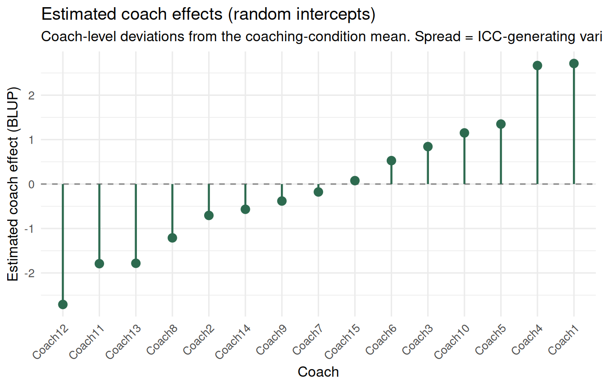

flowchart TD
A["Participants — N = 240"] --> B["Coaching condition\nN = 120"]
A --> C["Self-serve condition\nN = 120"]
B --> D["Coach 1\n8 participants"]
B --> E["Coach 2\n8 participants"]
B --> F["...Coach 15\n8 participants"]
C --> G["Participant A\n(independent)"]
C --> H["Participant B\n(independent)"]
C --> I["...Participant N\n(independent)"]
style D fill:#e8f5e9,stroke:#2d6a4f
style E fill:#e8f5e9,stroke:#2d6a4f
style F fill:#e8f5e9,stroke:#2d6a4f
style G fill:#f0f0f0,stroke:#888888
style H fill:#f0f0f0,stroke:#888888
style I fill:#f0f0f0,stroke:#888888
Partially Nested Designs
Partially Nested Designs
Partial-Nesting Design Audit
Before fitting, verify that your design is actually partially nested — that one arm has genuine shared context and the other does not.
When Only One Condition Has Clustering
Consider a financial coaching field experiment. The treatment group receives group financial coaching: 8 participants share a coach, 15 coaches total. The control group receives a self-serve information module — there is no coach and no shared group structure. Control participants are fully independent of each other.
This design is partially nested: only the treatment condition has a natural cluster structure.
Why this creates a modeling problem
If you fit a standard two-level model treating all participants the same way, you are forced into one of two bad choices:
- Ignore clustering in the treatment group — deflating standard errors and inflating Type I error for the treatment effect
- Apply random effects to all participants — misspecifying the control group, which has no actual clustering
Neither is honest about what the design actually looks like. The correct description of the design is asymmetric: one arm has coach-induced dependence; the other does not.
The design structure
Green boxes share a coach — their outcomes are correlated. Grey boxes are fully independent. A model that treats green and grey identically is wrong about both.
The key intuition
Each coach is a shared environment. A particularly effective coach lifts all eight of their clients’ outcomes together. A disengaged or poorly trained coach drags them all down. This coach-induced similarity is variance at the cluster level, not at the individual level. It inflates observed similarity within coaching groups beyond what you would expect from individual-level randomness alone.
The control group has no equivalent of this shared-environment effect. Each self-serve participant experiences the same information materials independently. There is no coach, no shared context, and no reason for outcomes to be correlated across control participants.
Simulating a Partially Nested Design
Code
n_coaches <- 15
n_per_group <- 8
n_control <- n_coaches * n_per_group # same total N = 120
# Treatment group: participants nested in coaching groups
# Coach effects introduce within-group similarity
coach_effects <- rnorm(n_coaches, 0, 3) # SD = 3 → ICC ≈ 0.20
df_treatment <- tibble(
condition = "coaching",
coach = rep(1:n_coaches, each = n_per_group),
participant = 1:(n_coaches * n_per_group),
coach_eff = rep(coach_effects, each = n_per_group),
savings_increase = 5 + 5 + coach_eff + rnorm(n_coaches * n_per_group, 0, 6)
# true mean = 10 (baseline 5 + treatment effect 5); coach effect varies around that
)
# Control group: independent participants — no coach, no shared structure
df_control <- tibble(
condition = "self_serve",
coach = NA_integer_,
participant = 1:n_control + max(df_treatment$participant),
coach_eff = 0,
savings_increase = 5 + rnorm(n_control, 0, 6)
)
df_pn <- bind_rows(df_treatment, df_control)Fitting the Partially Nested Model in lme4
The trick is to create cluster IDs that correctly represent the design’s actual structure:
- Coaching participants: share the coach ID
- Control participants: each gets a unique “cluster” ID of their own — indicating no shared context
A random effect estimated on this ID variable will pick up coach-level variance in the coaching condition, but will estimate near-zero variance for control participants (because each has their own “cluster” and there is nothing to share).
Code
df_pn <- df_pn |>
mutate(
cluster_id = ifelse(condition == "coaching",
paste0("Coach", coach),
paste0("Ctrl", participant))
)
# Partially nested: the cluster_id random effect operates only meaningfully
# in the coaching condition; control participants each have a singleton cluster
m_pn <- lmer(savings_increase ~ condition + (1 | cluster_id), data = df_pn)
# Compare to naive model — ignores all clustering
m_naive <- lm(savings_increase ~ condition, data = df_pn)| model | estimate | std.error | p.value |
|---|
Visualizing coach-level variance
The coach random effects plot shows the between-coach spread. This is exactly the shared-environment variance that the naive model erroneously absorbed into the residual:
Code
# Extract BLUP estimates for coaching groups
re_df <- ranef(m_pn)$cluster_id |>
rownames_to_column("cluster") |>
rename(blup = `(Intercept)`) |>
filter(str_starts(cluster, "Coach")) |>
mutate(coach_id = as.integer(str_remove(cluster, "Coach"))) |>
arrange(blup)
ggplot(re_df, aes(x = reorder(cluster, blup), y = blup)) +
geom_hline(yintercept = 0, linetype = "dashed", color = "#888888") +
geom_point(color = "#2d6a4f", size = 3) +
geom_segment(aes(xend = cluster, y = 0, yend = blup),
color = "#2d6a4f", linewidth = 0.8) +
labs(
title = "Estimated coach effects (random intercepts)",
subtitle = "Coach-level deviations from the coaching-condition mean. Spread = ICC-generating variance.",
x = "Coach",
y = "Estimated coach effect (BLUP)"
) +
theme_minimal(base_size = 12) +
theme(axis.text.x = element_text(angle = 45, hjust = 1))
The spread in these estimates is what the naive model ignores. It treats participants from an effective coach and participants from an ineffective coach as if they were drawn from the same independent distribution — understating uncertainty about the coaching condition’s overall effect.
Reporting checklist for partially nested designs
The Observational–Experimental Bridge
The partial-nesting problem is not unique to experiments. It appears in observational studies whenever one subgroup has clustering and another does not. Common examples:
- Branch-level program availability: households near a branch offering a financial planning service are clustered within that branch environment; households without branch access are independent
- Advisor assignment in financial services: clients assigned to human advisors share an advisor context; clients in a self-service portal do not
- Message delivery via teams: consumers receiving a financial message through a group workshop share a facilitator; those receiving it individually do not
In each case, the same diagnostic question applies: does one group have shared context that induces outcome correlation, while the other group does not? If yes, the partially nested model is the right choice, whether the clustering arose from experimental design or from a naturally occurring asymmetry in the observational data.
Assumptions
Reviewer Challenge
TipWhat a Reviewer Would Ask
Challenge 1: “Why not just include coach fixed effects?” Fixed effects for coaches would absorb all between-coach variance and correctly account for clustering — but they consume 14 degrees of freedom, cannot generalize to new coaches, and cannot estimate the between-coach variance component that characterizes the program’s implementation fidelity. Random effects are preferred when coaches are a sample from a population and the goal is generalizable inference about the coaching condition overall.
Challenge 2: “Your SE is bigger with the partially nested model — how do I know you are not just being conservative arbitrarily?” The partially nested SE is not arbitrary conservatism — it is a consequence of the design. Participants within a coaching group are not independent sources of evidence about the coaching condition; they are partially redundant because they share a coach. The effective sample size for the coaching condition is n coaching groups, not n × 8 individual participants. The inflated SE correctly reflects that the design has less statistical power than naive sample sizes suggest.
Challenge 3: “What if between-coach differences just reflect participant sorting into coaching groups?” If participants self-selected coaches rather than being randomly assigned, the coach random effect conflates coach quality with the characteristics of coach-seekers. In the experimental context here, participants are randomly assigned to coaches — so the coach effects are not confounded with pre-existing participant differences. In an observational study with self-selected coaches, this concern would require explicit investigation.